News
News from SERU, newest first. Each entry has its own link for sharing.
202610 entries
-
Two papers accepted at APSEC 2026
Two papers by our undergraduate students have been accepted at the 33rd Asia-Pacific Software Engineering Conference (APSEC 2026), held from 7 to 10 December 2026 in Bali, Indonesia. In the Technical Track, Panya Trakoolgerntong, Arus Thienmee, and Patsathorn Chadbanterng rank the links in code reviews, so that a reviewer knows which one to read first. In the ERA Track, Napasorn Lapprakobkit looks at how open-source projects adopt and maintain the Agent Package Manager. Prof. Yasutaka Kamei's POSL team at Kyushu University hosted Panya and Napasorn as interns and guided both papers.
Read more → -
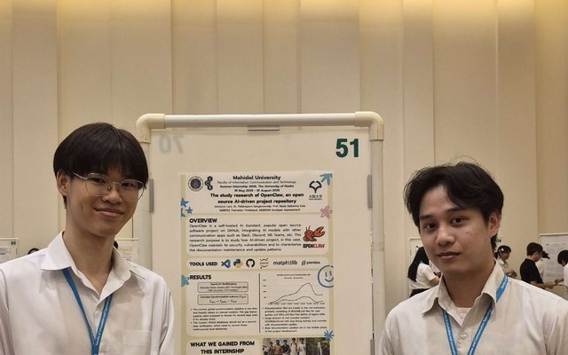
ICT Internship Poster Exhibition
Our summer interns presented their work at the ICT Internship Poster Exhibition 2026, “Quest for the Future!”, on 23 September in the Grand Auditorium of the ICT Building. Their posters covered a summer of research at our partner labs in Japan, POSL at Kyushu University, the Software Design and Analysis Laboratory at NAIST, and The University of Osaka. The summer also produced papers. One is already accepted at APSEC 2026, and two more have been submitted. We thank our hosts for welcoming our students and guiding them all summer.
-
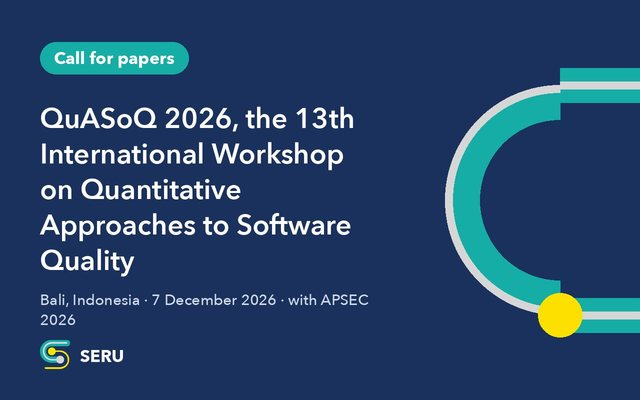
QuASoQ 2026 call for papers
Thanwadee Sunetnanta is a co-chair of QuASoQ 2026, the 13th International Workshop on Quantitative Approaches to Software Quality. The workshop takes place on 7 December 2026 in Bali, Indonesia, together with APSEC 2026. It welcomes work that measures, assesses, and evaluates the quality of software systems and of the processes that build them, and it encourages experience reports from industry. Papers are due on 9 October 2026, and accepted papers appear in CEUR-WS, which Scopus indexes.
Read more → -
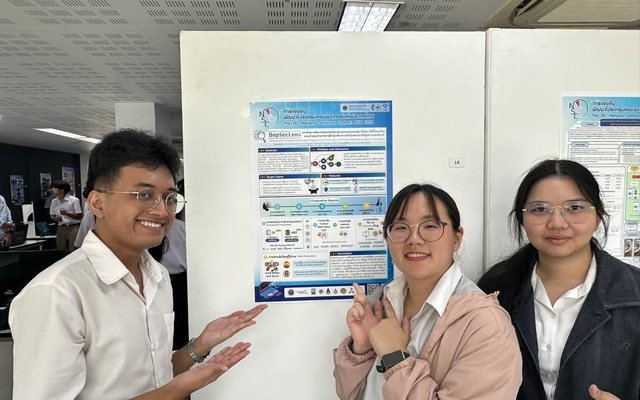
Honorable Mention at NSC 2026
DepSecLens, a web tool that checks the security of a Python project's dependencies, received an Honorable Mention at the 28th National Software Contest (NSC 2026). Chayanid Termphaiboon, Thitapha Singtho, and Papopporn Thongnarintr presented it on 24 July at the Faculty of Science, Silpakorn University, and went on to the final round. The tool grew out of research. Chayanid first studied how PyPI packages declare security policies during an internship at NAIST, and that study became a paper at the ASE 2025 workshops. DepSecLens draws on OSV.dev and the OpenSSF Scorecard and adds an LLM assistant for questions about a project's dependencies.
Read more → -
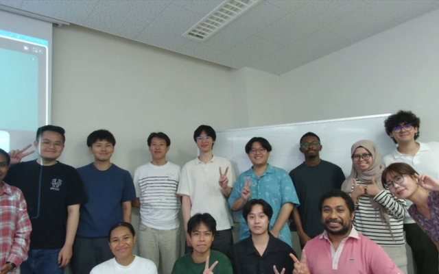
Summer internships in Japan
Eight of our undergraduates spent the summer at partner universities in Japan and presented their results to their hosts in late July and early August.
- Krittanon Chongklahan and Pundharee Puckdinukul joined the Software Design and Analysis Laboratory at NAIST.
- Mana Sudthamma and Napasorn Lapprakobkit joined POSL at Kyushu University.
- Thanadon Yindeesuk and Kuntapat Asawaworarit joined Prof. Raula Gaikovina Kula's team at The University of Osaka.
- Yu-Han Huang and Natkrittar Maswongwiwat joined Tokyo City University.
Napasorn's internship study is now a paper at APSEC 2026.
Read more → -
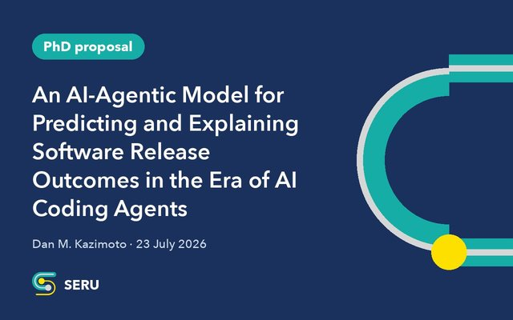
PhD thesis proposal defense
Our doctoral student Dan M. Kazimoto defended a PhD thesis proposal titled “An AI-Agentic Model for Predicting and Explaining Software Release Outcomes in the Era of AI Coding Agents” on 23 July 2026. AI coding agents such as GitHub Copilot, Claude Code, and OpenAI Codex now write code for software projects as teammates. The proposed model forecasts the productivity and quality of a software release, explains each forecast in terms a team can check, and stays valid when AI agents contribute. It also introduces the AI-inclusive bus factor, an ownership measure that counts AI agents alongside people. Asst. Prof. Dr. Morakot Choetkiertikul advises the thesis, with Suppawong Tuarob and Thanwadee Sunetnanta as co-advisors, and Mahidol University's Faculty of Graduate Studies approved the thesis title on 11 August.
-
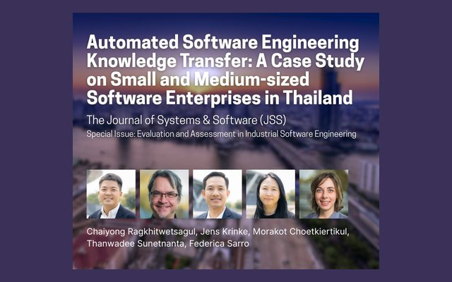
Knowledge transfer study accepted in JSS
Our study “Automated Software Engineering Knowledge Transfer: A Case Study on Small and Medium-Sized Software Enterprises in Thailand” has been accepted in the Journal of Systems and Software (JSS), a Q1 journal, in a special issue on Evaluation and Assessment in Industrial Software Engineering. We worked with four small and medium-sized software companies in Thailand and compared their practice before and after they adopted automated software engineering tools and techniques. The data came from an online survey, retrospective meetings, and interviews. The study completes our Newton Fund project, funded by the Royal Academy of Engineering, UK, and Thailand Science Research and Innovation (TSRI).
Read more → -
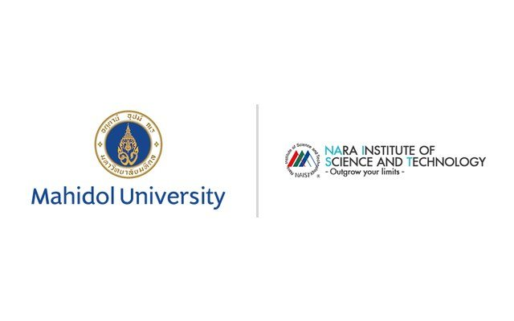
Doctoral double degree with NAIST
The Faculty of ICT and the Nara Institute of Science and Technology (NAIST) in Japan signed an agreement for a doctoral double degree program. The signing ceremony took place at Mahidol University on 28 January 2026, and NAIST confirmed receipt of the signed agreement on 10 February. Under the program, a doctoral student can earn degrees from both universities. It builds on years of work between SERU and NAIST, including summer internships and joint papers.
-
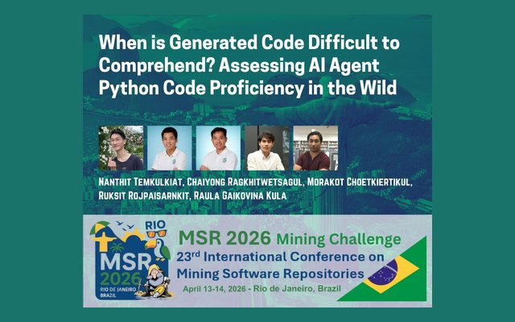
MSR 2026 Mining Challenge paper
Our paper “When is Generated Code Difficult to Comprehend? Assessing AI Agent Python Code Proficiency in the Wild” was accepted in the Mining Challenge track of MSR 2026, held in Rio de Janeiro, Brazil, in April 2026. AI coding agents now write much of the code that developers review, so the team asked how advanced that code is. They mined 591 pull requests with 5,027 Python files written by three AI agents and rated each construct with pycefr, on six levels from A1 (Basic) to C2 (Mastery). Over 90% of the constructs fell into the two basic levels and under 1% reached Mastery, a profile close to that of human pull requests. Nanthit Temkulkiat, the first author, was a 2025 summer intern at The University of Osaka.
Read more → -
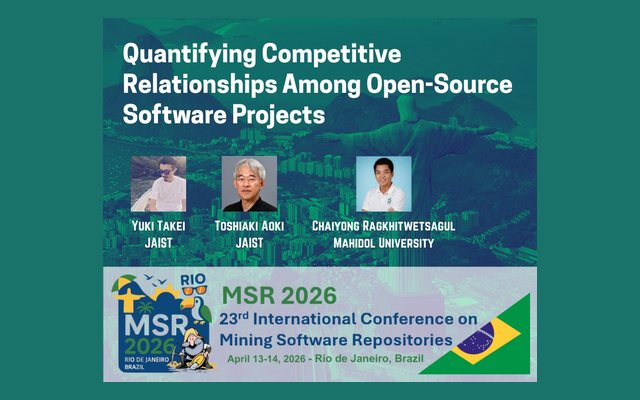
Competition study accepted at MSR 2026
A paper by Yuki Takei and Prof. Toshiaki Aoki of JAIST and Chaiyong Ragkhitwetsagul of Mahidol University was accepted in the Technical Papers track of MSR 2026, the 23rd International Conference on Mining Software Repositories, which CORE ranks A. Titled “Quantifying Competitive Relationships Among Open-Source Software Projects”, it introduces MIAO (Mutual Impact Analysis of OSS). MIAO applies structural vector autoregressive models, a method common in macroeconomics, to measure how open-source projects compete with each other. Across 187 groups of related projects, it identified projects at risk of ceasing development under competitive pressure with up to 81% accuracy. The conference took place in Rio de Janeiro, Brazil, on 13 and 14 April 2026.
Read more →
202518 entries
-
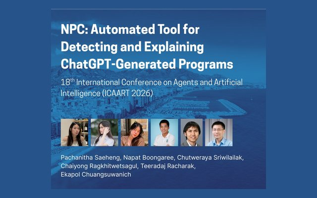
NPC tool accepted at ICAART 2026
NPC, a tool built by our students Pachanitha Saeheng, Napat Boongaree, and Chutweeraya Sriwilailak, was accepted for publication at ICAART 2026, the 18th International Conference on Agents and Artificial Intelligence. NPC detects code snippets generated by ChatGPT and explains each decision, using machine learning with a local neighborhood sampling strategy that the team proposed for post-hoc explanations. It runs as a web application and gives educators an easy-to-understand explanation for each classification. Professors who evaluated the tool found the explanations clear and helpful, which suggests it can support academic integrity in programming education. Dr. Chaiyong Ragkhitwetsagul, Dr. Teeradaj Racharak of Tohoku University, and Dr. Ekapol Chuangsuwanich of Chulalongkorn University co-supervised the project, which began during a 2024 research internship at JAIST.
Read more → -
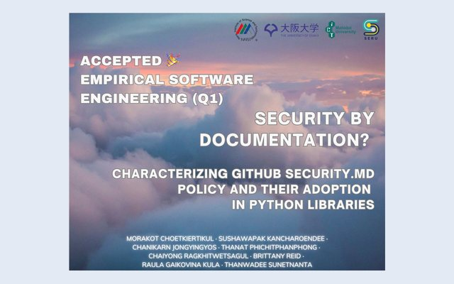
SECURITY.md study accepted in EMSE
Our paper “Security by Documentation? Characterizing GitHub SECURITY.md Policy and Their Adoption in Python Libraries” has been accepted in Empirical Software Engineering (EMSE), a Q1 journal. Many open-source projects publish a SECURITY.md file that tells users how to report vulnerabilities. Earlier studies counted how many projects adopt such a policy, but they did not examine what the policies say. The study analyzed the security policies of 679 Python libraries from PyPI hosted on GitHub and found that projects with a SECURITY.md file follow recommended security practices more closely. The work grew from internship research by our bachelor's students, with partners at NAIST and The University of Osaka.
Read more → -
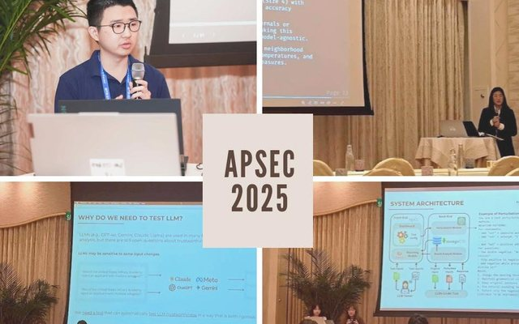
SERU at APSEC 2025 in Macao
Four SERU students presented their research at the 32nd Asia-Pacific Software Engineering Conference (APSEC 2025) in Macao on 4 December 2025. Panya Trakoolgerntong presented AILinkPreviewer, a tool that previews the links in code reviews, which grew from an internship at POSL, Kyushu University. Chommakorn Sontesadisai and Lapatrada Dangsungnoen presented PromptOps, a tool that tests how far large language models can be trusted. Chayanee Junplong presented work on explaining code clone detection with an LLM-based explainer. Both tools appeared in the Tool Demo track.
Read more → -
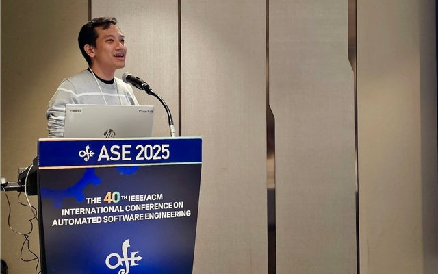
SERU at ASE 2025 in Seoul
SERU members presented three papers at the 40th IEEE/ACM International Conference on Automated Software Engineering (ASE 2025) and its workshops in Seoul, South Korea, in November 2025. Chayanid Termphaiboon presented “Exploring the SECURITY.md in the Dependency Chain: Preliminary Analysis of the PyPI Ecosystem” at the International Workshop on Intelligent Software Engineering (ISE 2025), work that grew from a summer internship at NAIST. Morakot Choetkiertikul presented Sprint2Vec, our IEEE TSE paper, in the Journal-First track. Rujiphart Charatvaraphan, Bunradar Chatchaiyadech, and Thitirat Sukijprasert presented their PyGress tool in the Tools, Code and Models session.
Read more → -
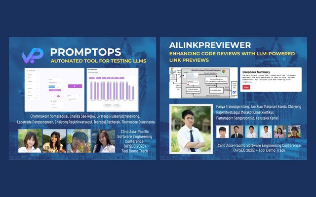
Two tool demos accepted at APSEC 2025
Two tools built by our students were accepted in the Tool Demo track of APSEC 2025, the 32nd Asia-Pacific Software Engineering Conference. PromptOps uses metamorphic testing to check how trustworthy and robust large language models are, with a visual canvas to set up tests and visual reports to compare results. Chommakorn Sontesadisai, Chalisa Sae-Ngow, Jirateep Rudeerudchanawong, and Lapatrada Dangsungnoen built it as their graduation project, which began with Chommakorn's research internship at JAIST. AILinkPreviewer, by Panya Trakoolgerntong, summarizes the links in pull requests so that reviewers grasp the context faster, and it grew from Panya's research internship at POSL, Kyushu University.
Read more → -
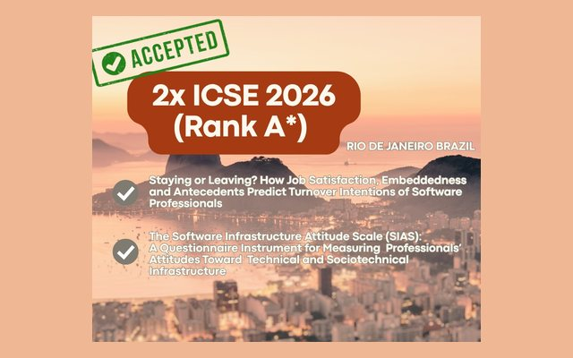
Two papers accepted at ICSE 2026
Two papers with SERU member Morakot Choetkiertikul as a co-author were accepted at ICSE 2026, the 48th International Conference on Software Engineering, which CORE ranks A*. Both are led by Miikka Kuutila and Prof. Paul Ralph of Dalhousie University. The first introduces and validates the Software Infrastructure Attitude Scale (SIAS), a questionnaire that measures how professionals view the technical and sociotechnical infrastructure they work with. The second surveyed 224 software professionals, and those with higher job satisfaction and job embeddedness reported weaker plans to leave. They appeared at the conference in Rio de Janeiro, Brazil, in April 2026.
Read more → -
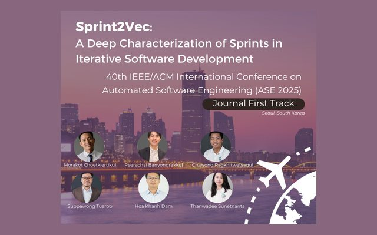
Sprint2Vec in the ASE 2025 Journal-First track
Our IEEE TSE paper “Sprint2Vec: A Deep Characterization of Sprints in Iterative Software Development” was accepted in the Journal-First track of ASE 2025. Sprint2Vec builds vector representations of Agile sprints from structured data, such as sprint reports, issue attributes, and developer profiles, and from text, such as issue descriptions and sequences of developer activity. Unlike earlier methods that predict only how much a sprint delivers, it predicts both productivity and quality, where quality means the risk of reopened issues. The evaluation covered nearly 8,000 sprints, 118,000 issues, and 3.7 million developer activities across five large open-source projects, where Sprint2Vec beat baseline and state-of-the-art approaches.
Read more → -
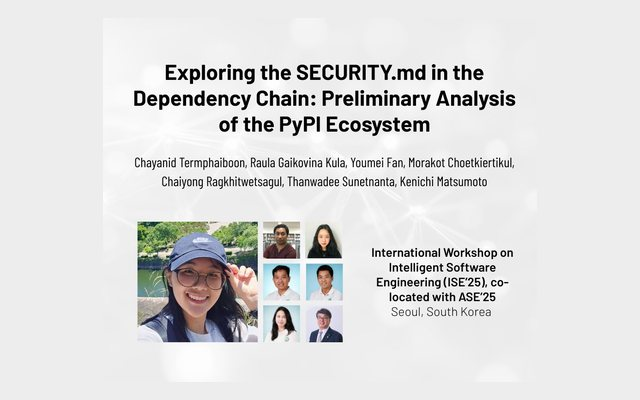
Internship study accepted at ISE 2025
A study by Chayanid Termphaiboon from a research internship at NAIST was accepted at the International Workshop on Intelligent Software Engineering (ISE 2025), co-located with ASE 2025. It compared Python projects on PyPI with and without a SECURITY.md file to see how security policies relate to dependency management. Projects with a security policy tend to rely on a broader set of direct dependencies, while the depth of their dependency chains is similar. Projects created after SECURITY.md was introduced, especially later adopters, update their dependencies more often. The results suggest that security policies go with more modular projects and more proactive dependency management.
Read more → -
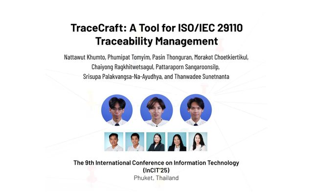
TraceCraft accepted at InCIT 2025
TraceCraft, a project by our DST undergraduate students Nattawut Khumto, Phumipat Tomyim, and Pasin Thonguran, was accepted for presentation at InCIT 2025, the 9th International Conference on Information Technology, in Phuket, Thailand. The web-based platform supports traceability and change tracking in line with ISO/IEC 29110, a standard widely adopted in Thailand to improve software quality in very small entities. It links project artifacts, supports verification and validation, and tracks the impact of changes across development stages. Visual indicators and reports point out missing links, outdated items, and dependencies. In a usability study with nine Thai practitioners, TraceCraft scored an average of 73.17 on the System Usability Scale.
Read more → -
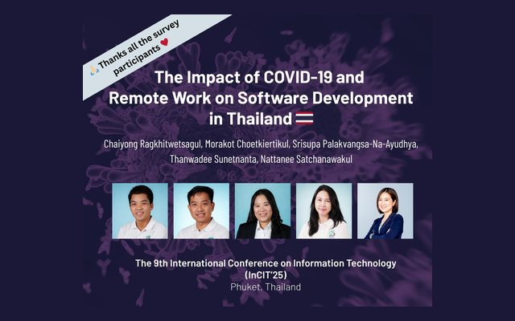
COVID-19 and remote work study at InCIT 2025
Our study “The Impact of COVID-19 and Remote Work on Software Development in Thailand” was accepted for publication at InCIT 2025. We surveyed 194 Thai software developers about the challenges and benefits of remote work during the COVID-19 pandemic. The results show no statistically significant differences in productivity or well-being before and after the shift to remote work. As in many global studies, Thai developers met both advantages and challenges, and the survey also found some perspectives specific to Thailand. The findings may also inform other Asian countries and other low- and middle-income economies. We donated to the Siriraj Foundation for every survey response.
Read more → -
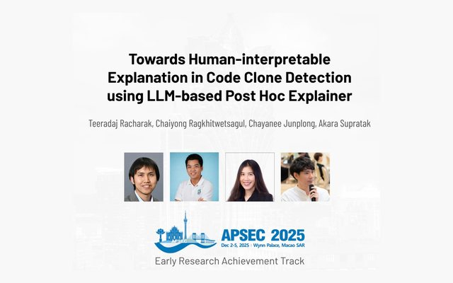
Code clone explanation paper accepted at APSEC 2025
Our paper on explaining code clone detection with large language models was accepted in the Early Research Achievements (ERA) track of APSEC 2025, the 32nd Asia-Pacific Software Engineering Conference, held from 2 to 5 December 2025 in Macao. Code clone detection models such as CodeBERT and GraphCodeBERT work as black boxes, and the paper proposes using a large language model to explain their decisions after the fact. Its Knowledge-based Local Neighbourhood (KLN) approach selects meaningful examples around a clone pair and lets the model write an explanation that people can read. The work grew from Chayanee Junplong's master's thematic paper, and Chayanee presented it at the conference in December.
Read more → -
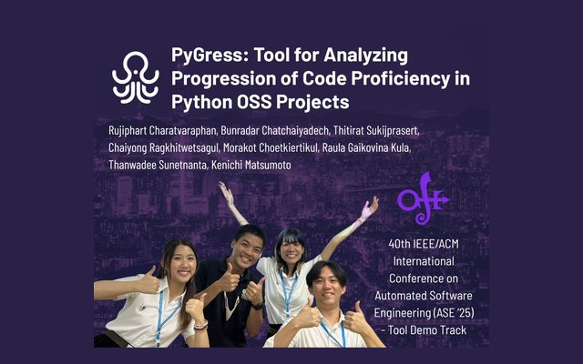
PyGress accepted at ASE 2025
PyGress, the senior project of Rujiphart Charatvaraphan, Bunradar Chatchaiyadech, and Thitirat Sukijprasert, was accepted in the Tool Demo track of ASE 2025, the 40th IEEE/ACM International Conference on Automated Software Engineering, which CORE ranks A*. PyGress is a web-based tool that evaluates and visualizes the proficiency of Python code using pycefr. It analyzes GitHub commit histories, maps code proficiency across the CEFR levels from A1 to C2, tracks how a project progresses over time, and shows each contributor's coding profile. Its interactive summaries let users explore how Python open-source projects and their contributors grow in proficiency. The team presented the tool at ASE 2025 in Seoul in November.
Read more → -
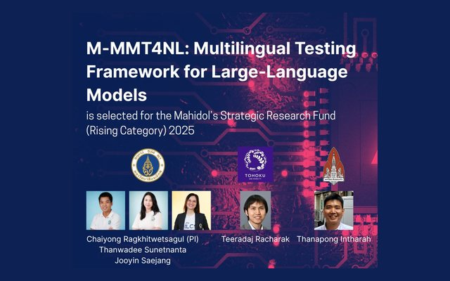
Mahidol Strategic Research Fund for M-MMT4NL
Our joint research proposal “M-MMT4NL: Multilingual Testing Framework for Large-Language Models” received the Mahidol Strategic Research Fund 2025 in the Rising category. The team brings together Dr. Chaiyong Ragkhitwetsagul, who leads the project, and Dr. Thanwadee Sunetnanta of Mahidol University, Dr. Teeradaj Racharak of Tohoku University, and Dr. Thanapong Intharah of Khon Kaen University. Building on our NLDB 2025 paper, the project uses metamorphic testing to generate test inputs for large language models. The goal is a framework that strengthens the trustworthiness of these models across several languages, including Thai, Japanese, and Chinese, over 18 months. Lapatrada Dangsungnoen's master's thesis carries the same title.
-
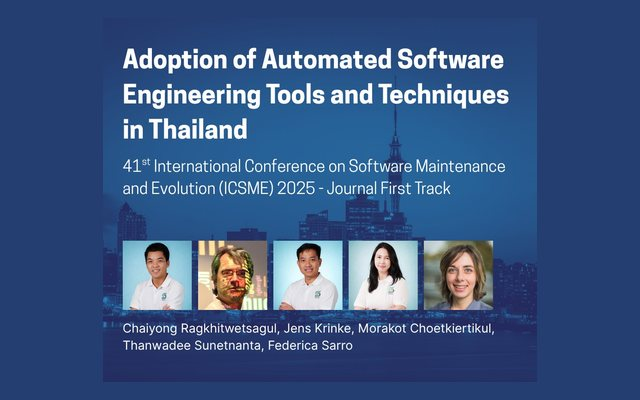
Thai tool adoption study in the ICSME 2025 Journal-First track
Our EMSE study on how software companies in Thailand adopt automated software engineering tools was accepted in the Journal-First track of ICSME 2025, the International Conference on Software Maintenance and Evolution. The study asked how small and medium-sized software enterprises adopt tools for software measurement, static code analysis, continuous integration, and software testing. Based on a survey of 103 Thai developers, it found that developers are generally familiar with these tools and see their benefits. A lack of knowledge or experience holds back measurement and static analysis tools, continuous integration is used with some difficulty, and manual testing remains common. We call for easier tools that lower the barrier for such companies in developing countries.
Read more → -
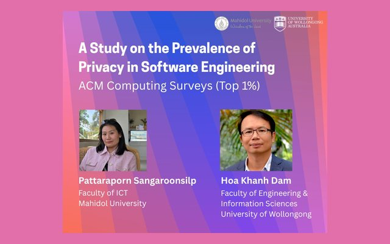
Privacy study accepted in ACM Computing Surveys
A systematic literature review by Dr. Pattaraporn Sangaroonsilp, “A Study on the Prevalence of Privacy in Software Engineering”, was accepted for publication in ACM Computing Surveys. Pattaraporn wrote it with Prof. Hoa Khanh Dam of the University of Wollongong. The review analyzed 187 primary studies and found privacy considerations in 12.14% of the software engineering research it examined. It also maps the common problem types, contributions, validation methods, and research focus areas, and it points to opportunities for researchers, academics, and practitioners. The paper is open access.
Read more → -
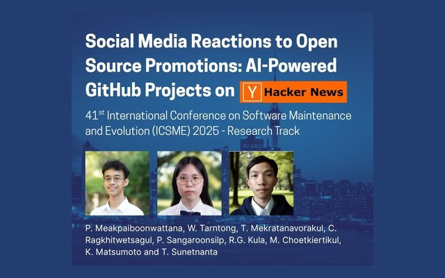
Undergraduate paper accepted at ICSME 2025
A paper by our undergraduate students Prachnachai Meakpaiboonwattana, Warittha Tarntong, and Thai Mekratanavorakul was accepted in the research track of ICSME 2025, the 41st International Conference on Software Maintenance and Evolution, which CORE ranks A. Titled “Social Media Reactions to Open Source Promotions: AI-Powered GitHub Projects on Hacker News”, it looks at what happens on GitHub after an open-source AI project is shared on Hacker News. The team analyzed over 2,000 posts and their linked repositories. After a project was shared on Hacker News, its forks, stars, and contributors increased, which suggests the site helps developers gain visibility and build a community. Their work began during a summer internship at NAIST.
Read more → -
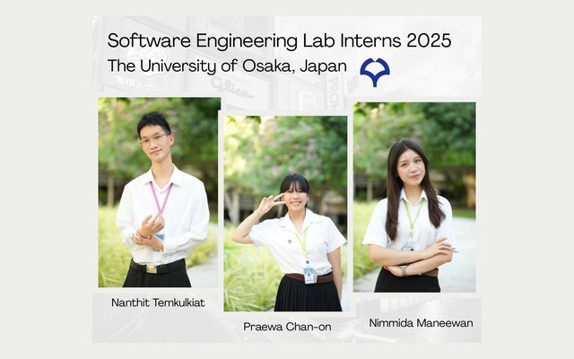
Summer internships 2025
In 2025 we sent 13 undergraduate students from the Faculty of ICT to five research labs in Japan and Australia for summer research internships. Three went to the Software Engineering Lab at The University of Osaka, and two went to the Software Engineering Lab at NAIST. Two went to POSL at Kyushu University, four to the ReaLearn Lab at Tohoku University, and two to Macquarie University in Australia. Work from that summer became papers at ISE 2025, APSEC 2025, and MSR 2026.
Read more → -
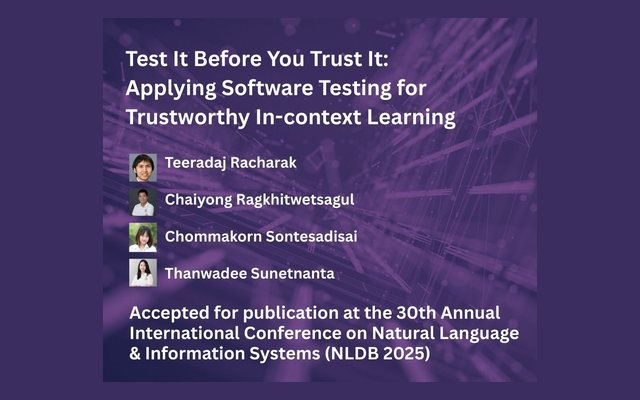
LLM testing paper accepted at NLDB 2025
Our paper “Test It Before You Trust It: Applying Software Testing for Trustworthy In-context Learning” was accepted at NLDB 2025, the 30th International Conference on Natural Language & Information Systems. The work is a collaboration with the ReaLearn lab of Dr. Teeradaj Racharak, at JAIST and now at Tohoku University. It applies metamorphic testing to large language models on two tasks, sentiment analysis and question answering. It changes the input in ways that keep its meaning, for example by swapping characters, replacing words with synonyms, and switching between active and passive sentences. Tests on OpenAI's GPT-4o and Google's Gemini-2.0-Flash found several cases where the models changed their answers on such inputs.
Read more →
202419 entries
-
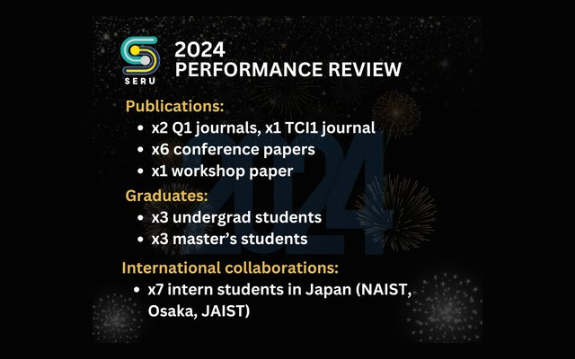
2024 in review
2024 was a productive year for SERU. We published two papers in Q1 journals, one in a tier 1 journal of the Thai-Journal Citation Index (TCI), six conference papers, and one workshop paper. Three undergraduate students and three master's students graduated. Seven of our students did research internships in Japan, at NAIST, Osaka University, and JAIST.
-
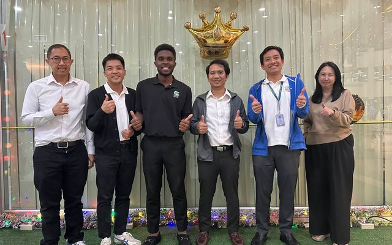
Master's thematic paper defenses
Our master's students Dan M. Kazimoto and Krittanan Jipimai (Mix) passed the final defenses of their thematic papers on 23 December 2024. Dan's work, “DEV-EYE: A Tool for Monitoring Bus Factor Using Commit History”, had just appeared in the ERA track of APSEC 2024. Mix's work, “Studying Computational Notebooks in Data Science Projects on GitHub”, is planned for publication as part of a journal paper. Asst. Prof. Dr. Morakot Choetkiertikul supervised both students. Dan has since continued to a PhD with SERU.
-
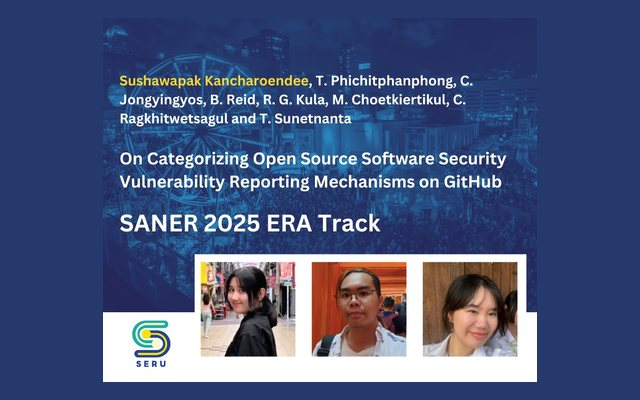
Security reporting study accepted at SANER 2025
Sushawapak Kancharoendee, Thanat Phichitphanphong, and Chanikarn Jongyingyos had their paper “On Categorizing Open Source Software Security Vulnerability Reporting Mechanisms on GitHub” accepted in the ERA track of SANER 2025. The study grew from their summer internship at NAIST. It examined 679 open-source projects to see how they ask people to report security vulnerabilities. Email is still the main reporting channel, and projects without a SECURITY.md file tend to be less secure, with lower OpenSSF scores. Many maintainers ask for private reporting, but some contributors still disclose vulnerabilities in public.
Read more → -
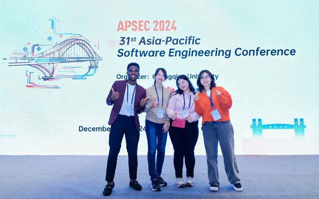
SERU at APSEC 2024 in Chongqing
Three of our students presented their work at the 31st Asia-Pacific Software Engineering Conference (APSEC 2024) in Chongqing, China. On 3 December, Ramita Deeprom presented “Challenges in Adopting LLaMA: An Empirical Study of Discussions on Stack Overflow” at the QuASoQ 2024 workshop, and Dan M. Kazimoto presented the DEV-EYE work at the EEE-OSS workshop. On 6 December, Chutweeraya Sriwilailak presented “Autorepairability of ChatGPT and Gemini: A Comparative Study”, and Dan presented “DEV-EYE: A Tool for Monitoring Bus Factor Using Commit History”, both in the ERA track. Shiyu Yang, a former research intern, joined the team at the conference.
-
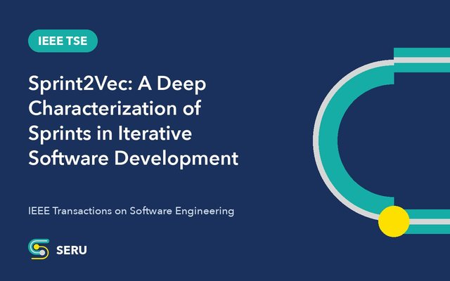
Sprint2Vec accepted in IEEE TSE
Our paper “Sprint2Vec: A Deep Characterization of Sprints in Iterative Software Development” was accepted in IEEE Transactions on Software Engineering (TSE), a Q1 journal. Sprint2Vec is a framework that characterizes the sprints of Agile projects from three kinds of information, namely sprint attributes, issue attributes, and the developers involved. Peerachai (Jay) Banyongrakkul contributed to the work for three years, starting as an undergraduate student and continuing as a PhD student. The paper appeared in the January 2025 issue of TSE, and we presented it in the Journal-First track of ASE 2025.
Read more → -
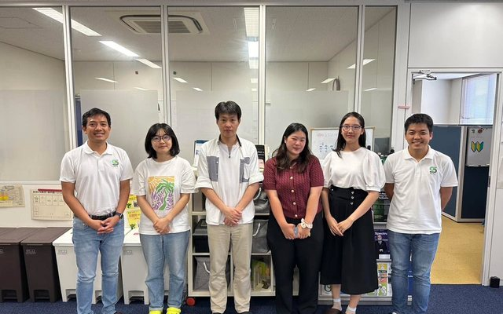
Internship study published at QuASoQ 2024
Ramita Deeprom's research internship study at the Software Engineering Lab of Osaka University was published at the 12th International Workshop on Quantitative Approaches to Software Quality (QuASoQ 2024), co-located with APSEC 2024. The paper, “Challenges in Adopting LLaMA: An Empirical Study of Discussions on Stack Overflow”, analyzes discussions about Meta's LLaMA on Stack Overflow. Model configuration, error handling, and integration with other technologies are the most prominent topics. Frequent co-occurring tags show how LLaMA fits into the wider ecosystem of large language models and works with frameworks such as Python and Hugging Face Transformers. The findings call for better resources, documentation, and community support, especially for configuring and fine-tuning the model.
Read more → -
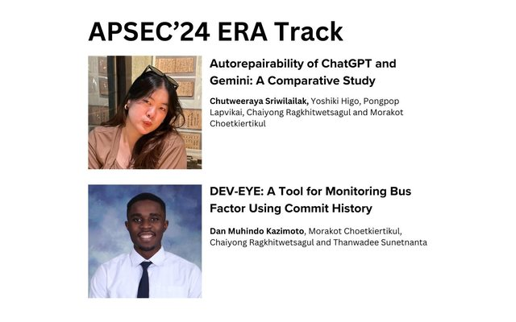
Two papers accepted at APSEC 2024
Chutweeraya Sriwilailak and Dan M. Kazimoto had their research accepted in the Early Research Achievements (ERA) track of the 31st Asia-Pacific Software Engineering Conference (APSEC 2024). Chutweeraya's work compares the autorepairability of two large language models, ChatGPT and Gemini, on a dataset of 1,200 functionally equivalent Java methods. Autorepairability is the degree to which automated program repair can be applied to software. Dan's work introduces DEV-EYE, a tool that calculates the bus factor and potential bus factors of a Git-based software project and suggests how to plan its future. Both papers were presented in Chongqing, China, in December 2024.
Read more → -
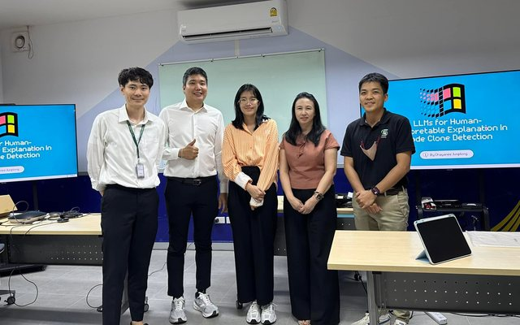
Master's defense on explaining code clones
Chayanee Junplong passed the defense of her master's thematic paper, “LLMs for Human-Interpretable Explanation in Code Clone Detection”, on 3 October 2024. Dr. Thanapong Intharah of Khon Kaen University chaired the examination committee, and Dr. Thanwadee Sunetnanta served on the committee. Dr. Chaiyong Ragkhitwetsagul, Dr. Teeradaj Racharak of JAIST, and Dr. Akara Supratak supervised the work. It later became a paper in the ERA track of APSEC 2025, which Chayanee presented in Macao in December 2025.
-
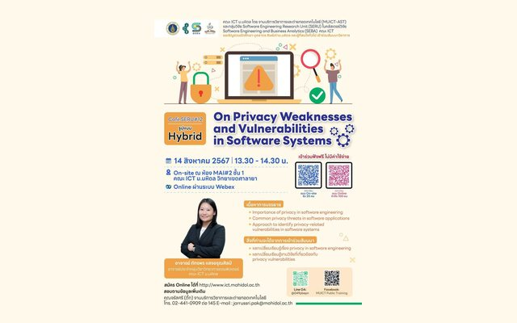
Café SERU No. 12 on privacy weaknesses
Dr. Pattaraporn Sangaroonsilp, our newest member, gave Café SERU No. 12, “On Privacy Weaknesses and Vulnerabilities in Software Systems”, on 14 August 2024 in room MUAI2. The talk drew on a study of all 922 weaknesses in the Common Weakness Enumeration (CWE) and 156,537 vulnerabilities in the Common Vulnerabilities and Exposures (CVE) system. Only 4.45% of the CWE weaknesses and 0.1% of the CVE vulnerabilities relate to privacy. The study proposed 11 new common privacy weaknesses for the CWE, so that it can serve as a source for both security and privacy vulnerabilities. Our seminars page has the abstract and speaker bio.
-
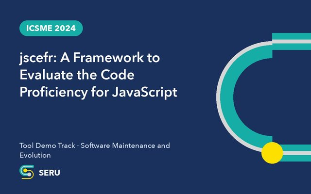
jscefr accepted at ICSME 2024
Our paper on jscefr was accepted in the Tool Demo track of ICSME 2024. jscefr, pronounced jes-cee-fer, is the work of our undergraduate students Komsan Kongwongsupak, Thanakrit Maneesawas, and Natpichsinee Puttiwarodom, with support from Ruksit Rojpaisarnkit, Morakot Choetkiertikul, Raula Gaikovina Kula, and Thanwadee Sunetnanta. The tool detects the elements of JavaScript used in a piece of code and estimates the proficiency needed to understand and maintain it. Based on the pycefr tool and the Common European Framework of Reference for Languages (CEFR), it classifies 138 JavaScript code constructs into six levels. The team applied it to three JavaScript projects from the npm ecosystem.
Read more → -
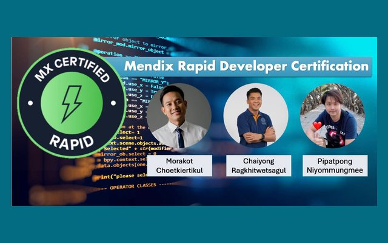
Mendix Rapid Developer certificates
Morakot Choetkiertikul, Chaiyong Ragkhitwetsagul, and Pipatpong Niyommungmee earned the Mendix Rapid Developer certification in July 2024. Mendix is a low-code platform on which developers build web and mobile applications mostly through visual models rather than hand-written code. The Rapid Developer certificate is the first of Mendix's four certification levels, followed by the Intermediate, Advanced, and Expert levels. It shows that the holder can design, build, and deploy applications on the platform.
-
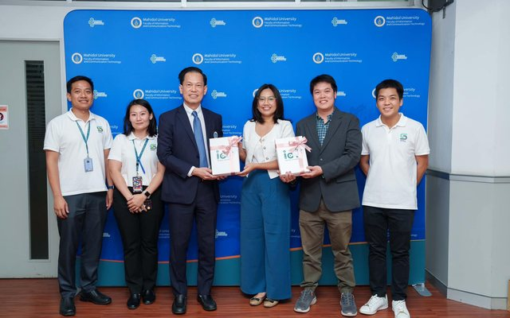
Café SERU No. 11 and a visit from Melbourne
Dr. Patanamon Thongtanunam of the University of Melbourne gave Café SERU No. 11, “Uncovering Hidden Challenges: Designing Data-Driven Solutions for Real-World Software Engineering”, on 25 June 2024 in room IT210. The talk covered studies of real software practice in three areas, agile planning, code reviews, and continuous integration. Dr. Thongtanunam and Dr. Chakkrit Tantithamthavorn visited the Faculty of ICT that day, and we discussed possible collaborations in both education and research. Our seminars page has the abstract and speaker bio.
Read more → -
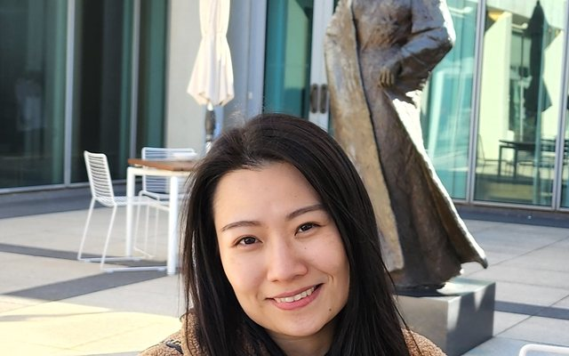
Pattaraporn Sangaroonsilp joins SERU
Pattaraporn Sangaroonsilp joined SERU in May 2024 after finishing her PhD at the University of Wollongong, Australia, with Prof. Hoa Khanh Dam, where she worked on privacy issues in software. Her research covers privacy and data protection in software systems, privacy requirements engineering, and privacy weaknesses and vulnerabilities. She is a lecturer at the Faculty of ICT. She gave her first Café SERU talk, on privacy weaknesses and vulnerabilities in software systems, in August 2024.
-
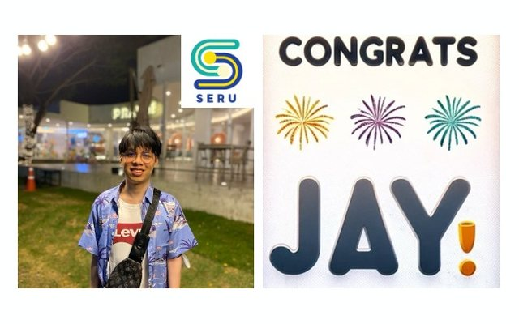
Melbourne Research Scholarship for Peerachai Banyongrakkul
Peerachai Banyongrakkul (Jay), a SERU member and ICT alumnus, received the Melbourne Research Scholarship. The scholarship supports his PhD in Engineering and IT at the University of Melbourne, where he will study bug reports in AI-based software applications. Jay began research with SERU as an undergraduate student and contributed to Sprint2Vec over three years. That work was accepted in IEEE Transactions on Software Engineering in November 2024.
-
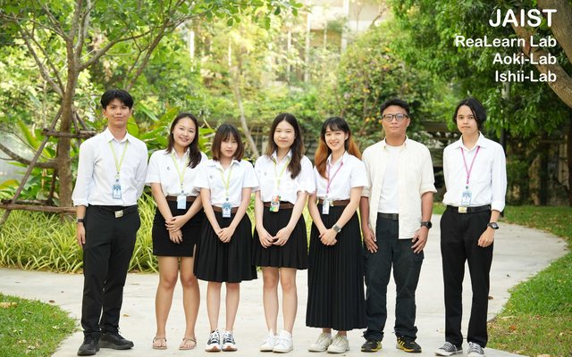
Summer internships 2024
SERU placed 11 undergraduate students in research summer internships in Japan for May to August 2024. Three were placed with the Software Engineering Lab at NAIST and two with the Software Engineering Lab at Osaka University. At JAIST, two joined the ReaLearn Lab, two the Ishii Lab, and two the Aoki Lab. Several of these internships became papers, at QuASoQ 2024, APSEC 2024, SANER 2025, ICSME 2025, and APSEC 2025.
Read more → -
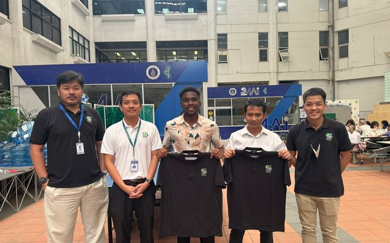
Master's thematic paper proposals
Our MSc students Dan M. Kazimoto and Krittanan Jipimai (Mix) defended their thematic paper proposals on 22 March 2024. Dan is building a tool that helps software practitioners monitor the project risks that come from dependencies between team members. Mix is mining and characterizing data science projects to find the factors that contribute to their success. Both students passed their final defenses in December 2024, and Dan's tool became DEV-EYE, published at APSEC 2024.
Read more → -
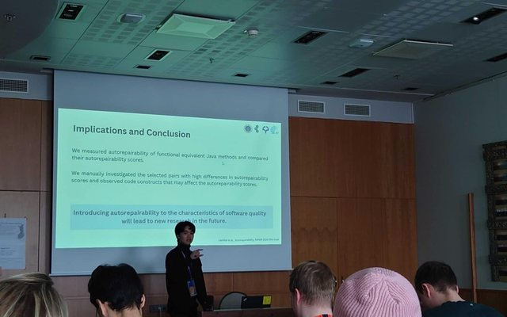
Autorepairability at SANER 2024
Pongpop Lapvikai presented “Autorepairability: A New Software Quality Characteristic” in the ERA track of SANER 2024 in Finland. It comes from Pongpop's 2023 summer internship at the Software Engineering Lab of Osaka University, under the supervision of Prof. Yoshiki Higo. The paper proposes autorepairability as a new characteristic of software quality, meaning the degree to which automated program repair can be applied to a piece of software. Chutweeraya Sriwilailak's APSEC 2024 paper took the idea further by comparing the autorepairability of ChatGPT and Gemini.
Read more → -
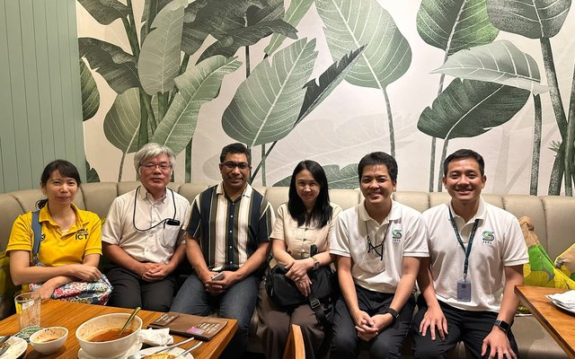
Visit from NAIST
Assoc. Prof. Raula Gaikovina Kula and Prof. Minoru Okada from NAIST visited SERU and our students at the Faculty of ICT. Prof. Kula met the students who interned at the Software Engineering Lab in 2023 and the new interns who would join in May 2024. The NAIST team also met the Dean of ICT. We discussed our ongoing research, extending the internships to Prof. Okada's lab, a PhD double degree program, and future grant applications. The double degree agreement was signed in January 2026.
Read more → -
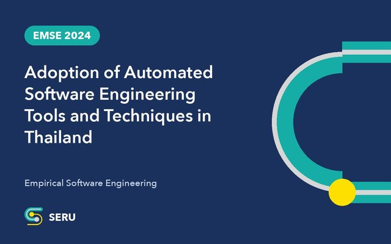
Thai tool adoption study accepted in EMSE
Our paper “Adoption of Automated Software Engineering Tools and Techniques in Thailand” was accepted in Empirical Software Engineering (EMSE), a Q1 journal. It looks at how aware Thai small and medium-sized software companies are of automated software engineering tools, how far they adopt them, and what challenges they meet, for software measurement, static code analysis, continuous integration, and software testing. We surveyed 103 Thai developers across four groups. The main challenges were a lack of knowledge and experience, long build times in continuous integration, and an emphasis on development over testing. The paper is the second publication of the Newton Fund project “Automated Software Engineering for Thailand Software Industry”, a collaboration between CREST at UCL and SERU since 2018.
Read more →
202317 entries
-
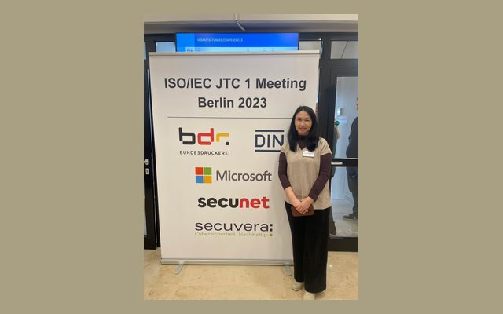
Thanwadee Sunetnanta at the ISO/IEC JTC 1 meeting in Berlin
Thanwadee Sunetnanta took part in the 2023 plenary meeting of ISO/IEC JTC 1 in Berlin, Germany, as one of the delegates of the Thai Industrial Standards Institute (TISI). JTC 1 is the joint technical committee of ISO and IEC for information technology, where national bodies agree by consensus on the international standards of the field. Its subcommittee for software and systems engineering looks after standards such as ISO/IEC 29110 for very small entities, which SERU members teach in training courses and use when they advise Thai software companies.
Read more → -
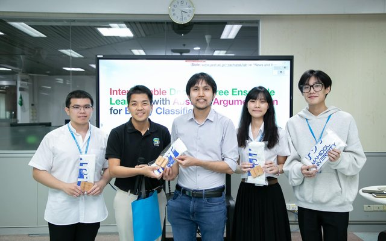
Café SERU No. 10 and a visit from JAIST
Dr. Teeradaj Racharak of the Japan Advanced Institute of Science and Technology (JAIST) spent three days with SERU from 25 to 27 October 2023. On the first day he gave Café SERU No. 10, “Interpretable Decision Tree Ensemble Learning with Abstract Argumentation for Binary Classification”, in room A2 of the MU AI Center, with mini-talks by his three summer interns from SERU, Runchana Seesung, Siranut Akarawuthi, and Nitit Ngamphotchanamongkol. His Arguing Tree Ensemble learns a group of decision trees and lets them argue with each other to reach a prediction, so users can follow and check how the model decided.
Read more → -
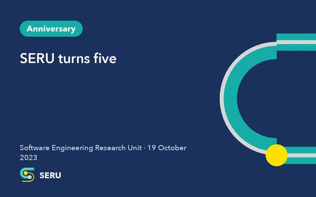
SERU turns five
SERU celebrated its fifth anniversary on 19 October 2023. In its first five years, the unit worked on software engineering research that helps software companies, especially in Thailand, while its members spent more than half of their time teaching software engineering at the Faculty of ICT. By the anniversary, SERU had published 3 journal papers, all in Q1 journals, 12 conference papers, most at venues that CORE ranks A or A*, and 5 workshop papers. It had won 5 research grants, and 45 undergraduate students had graduated with SERU. Three master's students and two PhD students were working with the unit.
-
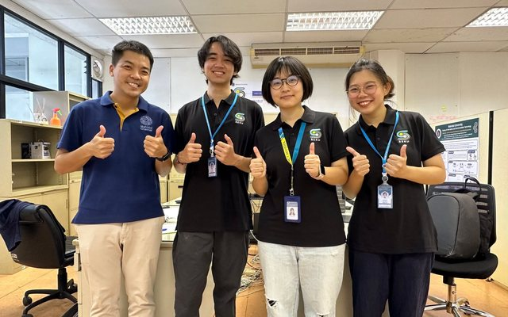
Visit from Osaka University
Shiyu Yang, a PhD student at the Software Engineering Laboratory of Osaka University, visited SERU from 1 to 20 September 2023. Over the summer, Shiyu had worked with Doungnapat Thiansukont, our intern at Osaka University, and the visit let the two continue that research at the Faculty of ICT. During the stay, Shiyu also started a new research topic with SERU. A year later, Shiyu co-authored Ramita Deeprom's QuASoQ 2024 paper on the challenges of adopting LLaMA and joined our students at APSEC 2024 in Chongqing.
Read more → -
Gitcoin study accepted in JSS
Our paper “Studying the association between Gitcoin's issues and resolving outcomes” was accepted in the Journal of Systems and Software (JSS), a Q1 journal. Gitcoin is a bounty platform where the owner of an open-source issue sets a reward in cryptocurrency for the person who resolves it. The study examined more than 4,000 issues with Gitcoin bounties using statistical analysis and machine learning, and compared Gitcoin with the Bountysource platform. It found that the length of the project, the issue description, the type of bounty issue, and the bounty value are closely associated with whether an issue gets resolved. The work is a collaboration between SERU, NAIST, and Shinshu University.
Read more → -
JAIST internship Students finished their internships
The 3 internship students at the ReLearn lab at JAIST, Runchana Seesung, Siranut Akarawuthi, and Nitit Ngamphotchanamongkol, under the supervision of Junior Assoc. Prof. Dr. Teeradaj Racharak finished their internship on the 10th of August 2023.
- Runchana's topic: Why are They Similar? Let's Explain via Description Logics
- Siranut's topic: Virtual Knowledge Graph with Explainable Similarity Reasoning
- Nitit's topic: Large language model for Argumentation Mining from Text
They are returning for their last year of study at the Faculty of ICT.
-
NAIST internship Students finished their internships
The 2 on-site internship students at the Software Engineering lab at NAIST, Sushawapak Kancharoendee (2nd-year student), and Rujiphart Charatvaraphan (3rd-year student), under the supervision of Assoc. Prof. Dr. Raula Kula finished their internship on the 4th of August 2023. They are returning for their 3rd year and the last year of study at the Faculty of ICT.
- Sushawapak's topic: Do the vulnerable Pypi libraries also have vulnerable dependencies?
- Rujiphart's topic: Analyze the competency level of Python code in PyPI projects
The two online internship students, Narita Chadha and Petchpearploy Subhadrabandhu, also finished their internship at the same time. Well done!
-
Osaka University internship Students finished their internships
Doungnapat Thiansukont and Pongpop Lapvikai finished their summer internship at Software Engineering Lab at Osaka University under the supervision of Prof. Yoshiki Higo on the 4th of August 2023.
- Doungnapat's topic: Python Validity in SO answer comments
- Pongpop's topic: Automatic repairability
They have returned for their last year of study at the Faculty of ICT.
-
University of Bremen internship Student finished her internship
Bunradar Chatchaiyadech finished her internship at the University of Bremen under the supervision of Prof. Rainer Koschke at the end of July 2023. Her internship topic is visualizing code clones using VR (the Software Engineering Experience (SEE) platform).
Bunradar is now back at the Faculty of ICT for her last year of study.
-
New SERU Logo
We redesigned a new logo for our SERU research group to celebrate the coming 5th year anniversary (the first commit on the SERU website was on 19 October 2018!). Compared to the previous logo, this one has only the "S" to represent the research group. This is to strive for a more modern and minimal design.
We still keep the oceanic green and cream colors to represent the Faculty of ICT and the dark blue color represents Mahidol University. The composition of the S consists of two components lightly connected to each other, like software, its fast-changing nature, and its dependencies 😉.
We would like to thank Miss Sirirat Wittayakunsatid, Audio Visual and Digital Learning Media Development Division at the Faculty of ICT, for her great design work!
-
Summer Internship 2023
We have 10 students doing international internships with our collaborators in 2023!
NAIST
2 students are doing on-site internships and 2 students doing online internships at the Software Engineering lab at NAIST. They're supervised by Asst. Prof. Dr. Raula Gaikovina Kula.
- Onsite: Sushawapak Kancharoendee and Rujiphart Charatvaraphan
- Online: Narita Chadha and Petchpearploy Subhadrabandhu
JAIST
3 students are going to on-site internships at JAIST under the supervision of Junior Assoc. Prof. Dr. Teeradaj Racharak: Runchana Seesung, Siranut Akarawuthi, Nitit Ngamphotchanamongkol
Osaka University
2 students are going to on-site internships at Osaka University under the supervision of Prof. Yoshiki Higo.
- Doungnapat Thiansukont
- Pongpop Lapvikai
University of Bremen
Bunradar Chatchaiyadech is going to on-site internships at U of Bremen under the supervision of Prof. Rainer Koschke.
The SERU team wishes them the best of luck and success for their internship!
-
SERU at ICSE 2023 in Melbourne
Three SERU students went to ICSE 2023, the International Conference on Software Engineering, and its co-located conferences in Melbourne, Australia, in May 2023. Pattarakrit Rattanukul and Pumipat Watanakulcharus presented Microusity, their undergraduate graduation project, at ICPC 2023. Tasha Settewong presented the registered report “Mining the Characteristics of Jupyter Notebooks in Data Science Projects” at MSR 2023, as one of very few undergraduate presenters, and received a compliment for the nicest slides so far. At ICPC 2023, Morakot Choetkiertikul and Chaiyong Ragkhitwetsagul also received Distinguished Reviewer Awards for their service on the program committee.
Read more → -
Registered report accepted at MSR 2023
“Mining the Characteristics of Jupyter Notebooks in Data Science Projects” was accepted as a registered report at MSR 2023, the 20th International Conference on Mining Software Repositories, which CORE ranks A. It builds on the graduation project of our senior students Tasha Settewong, Urisayar Kaewpichai, and Vacharavich Jiravatvanich, and Morakot Choetkiertikul and Apirak Hoonlor led the team. The study plans to compare high-voted Jupyter notebooks on Kaggle with popular data science notebooks on GitHub. It will use exploratory analysis, data visualization, and feature importance to find the patterns and good practices that separate high-voted notebooks from low-voted ones. The insights could guide aspiring data scientists who want to move from a novice notebook on Kaggle to a project that can be deployed on GitHub.
Read more → -
Typhon at NSC 2023
Natanon Ritta, Veerakit Prasertpol, and Paphon Sae-wong presented Typhon at the 25th National Software Contest (NSC 2023) on 1 April 2023, where their project reached the poster round. Typhon is a Visual Studio Code extension that recommends relevant code cells in Jupyter notebooks based on a given Markdown text. The tool came out of their senior project on recommending code cells in Jupyter notebooks, which Chaiyong Ragkhitwetsagul advised with Raula Gaikovina Kula of NAIST as part of a NAIST research internship. Natanon had earlier studied how competitors reuse their own code in Jupyter notebooks, in an ERA paper at APSEC 2022.
Read more → -
Microusity accepted at ICPC 2023
Microusity, the graduation project of Pattarakrit Rattanukul, Chansida Makaranond, and Pumipat Watanakulcharus, was accepted in the Tool Demonstration track of ICPC 2023, the 31st IEEE/ACM International Conference on Program Comprehension, which CORE ranks A. The tool runs RESTful API tests on Backends for Frontends (BFF), a microservice pattern, and traces BFF requests by mapping each request to the sub-requests that the BFF sends to back-end services. It pinpoints the back-end service behind an internal server error, which may lead to unhandled errors or vulnerabilities, and shows the source of the error in a report and a graph. Eight software practitioners who evaluated it found Microusity and its security test reports useful for understanding problems in BFF systems.
Read more → -
Sakura Science program at NAIST
Komsan Kongwongsupak, Thanakrit Maneesawas, and Natpichsinee Puttiwarodom, the three students of our jscefr project, spent two weeks at the Software Engineering Laboratory of NAIST in January 2023 through the Sakura Science program. They studied the competency level of code in React projects, which meant learning new methods such as correlation analysis and statistical tests, and presented their results at the end of the stay. Together with three students from UMS in Indonesia, they finished their final reports and received Sakura Science certificates from the president of NAIST. The study grew into jscefr, a tool that estimates the proficiency needed to understand JavaScript code, which was accepted at ICSME 2024.
Read more → -
Visit to Osaka University
In January 2023, Morakot Choetkiertikul and Chaiyong Ragkhitwetsagul visited the Software Engineering Laboratory and the Software Design Laboratory at Osaka University in Japan, where they presented SERU's research and discussed future collaboration. The talk covered our work on improving Thailand's software development, software engineering for data science, the effects of COVID-19 on software development, data analytics for software development, and code quality, with the FixMe bot as an example. The same research trip included a visit to NAIST. Since that summer, Osaka University has hosted SERU students for research internships every year.
Read more →
202211 entries
-
Café SERU No. 9 on effort estimation
Jirat Pasuksmit, a PhD candidate at the University of Melbourne and an expert in agile software development, gave Café SERU No. 9, “Effort Estimation for a Reliable Sprint Planning in Agile Iterative Development”, on 21 December 2022 at the Faculty of ICT. In Scrum and similar methods, a team plans its work in sprints of two to four weeks and estimates the effort by consensus, for example with Planning Poker. Such estimates are prone to error, which wastes team effort on re-planning. The talk covered the common reasons for inaccurate estimates, their impact, and advice for practitioners on reliable effort estimation and sprint planning. People joined both onsite and online, and the recording is on YouTube.
Read more → -
Best EDU Paper Award at APSEC 2022
Our paper “Virtual Reality for Software Engineering Presentations” won the Best EDU Paper Award in the Software Engineering Education (EDU) track of APSEC 2022, the 29th Asia-Pacific Software Engineering Conference. Chaiyong Ragkhitwetsagul and Morakot Choetkiertikul wrote it with Apirak Hoonlor and Mores Prachyabrued. The study used virtual reality for students' class project presentations and found that it can help increase the students' engagement, their interaction, and their feeling of presence. The same teaching technique had earned our course ITCS431 Software Design and Development an honorable mention from Mahidol University in 2021.
Read more → -
Newton Fund project wraps up
Dr. Jens Krinke of University College London (UCL) and Chaiyong Ragkhitwetsagul visited three of our industry partners, Roots, CourseSquare, and ProGaming, to conclude the project “Automated Software Engineering for Thailand Software Industry”. Over four years, the project studied the software engineering challenges of Thai software SMEs, their awareness and adoption of automated software engineering tools and techniques, and how SonarQube and unit testing can benefit them. The findings show that these companies work under several constraints that hold back their adoption of advanced techniques, so they still need to adopt the basic ones fully first. Both the researchers and the companies learned a lot from the project and look forward to working together again.
Read more →The 2019 grantThe SANER 2022 paperThe EMSE paperThe JSS paper
-
Café SERU No. 8, back on site
Assoc. Prof. Dr. Jens Krinke, Director of CREST at University College London, gave Café SERU No. 8, “Toxic Code on Stack Overflow”, on 16 November 2022 in room A2 of the MU AI Center. It was our first seminar on site since the COVID-19 pandemic. Developers exchange code snippets on Stack Overflow, and researchers harvest those snippets for recommendation systems, but the code can have quality problems such as security or license issues. The talk covered how Stack Overflow users perceive such issues, the problem of outdated code and possible license violations, and code on Stack Overflow that breaks coding style and contains security problems. Such toxic code may affect both the projects that reuse it and the mining or machine learning work that uses Stack Overflow as a code base.
Read more → -
V-Achilles at ASE 2022
Vipawan Jarukitpipat presented V-Achilles in the Tool Demo track of ASE 2022, the 37th IEEE/ACM International Conference on Automated Software Engineering, which CORE ranks A*, on 13 October 2022 in Rochester, Michigan, USA. The tool helps developers update vulnerable dependencies in npm projects by showing, as dependency graphs, which packages a vulnerability affects through both direct and transitive dependencies. Vipawan built it with Klinton Chhun and Wachirayana Wanprasert as their undergraduate graduation project, with professors from SERU and NAIST. V-Achilles was an early step in our work with NAIST on the security of software dependencies, which later produced DepSecLens, an Honorable Mention at NSC 2026.
Read more → -
Two internship papers accepted at APSEC 2022
Tasha Settewong and Natanon Ritta, our interns at the Software Engineering Laboratory of NAIST, each had a paper accepted in the Early Research Achievements (ERA) track of APSEC 2022, the 29th Asia-Pacific Software Engineering Conference. Both papers study the Jupyter notebooks of Grandmasters, the highest rank of competitors on Kaggle. Tasha's paper catalogs the visualizations that seven Grandmasters use, with nine types drawn from 821 visualizations in 68 notebooks. Natanon's paper looks at how competitors reuse their own code and finds that Grandmasters tend to reuse common code, such as package imports, configurations, and plotting, rather than specialized code. Both students presented their work online at the conference in December 2022.
Read more → -
COVID-19 survey and a donation to Siriraj
Between September 2021 and July 2022, SERU surveyed Thai software developers and IT workers on how the COVID-19 pandemic and working from home affected their productivity and their work, and on how their organizations could support them. For every response, the team promised to donate 10 baht to the Siriraj Foundation's fund for fighting COVID-19, up to 4,000 baht. The survey closed with 220 responses, so the team donated 2,200 baht and added 1,800 baht of its own, 4,000 baht in all. The study was published at InCIT 2025 as “The Impact of COVID-19 and Remote Work on Software Development in Thailand”, which reports the answers of 194 Thai software developers.
-
Component recommendation paper at JCSSE 2022
Morakot Choetkiertikul presented “A component recommendation model for issues in software projects” at JCSSE 2022, the 19th International Joint Conference on Computer Science and Software Engineering, held from 22 to 25 June 2022 at Silpakorn University in Bangkok. The work comes from Pacawat Kangwanwisit's research internship at the Software Engineering Laboratory of NAIST. The model supports issue triage by recommending the software components that a new issue relates to, based on the text of the issue. It outperformed traditional baselines for recommendation systems, and among the text representations that the study compared, TF-IDF worked well in most cases.
Read more → -
Lessons learned with Thai software SMEs
On 22 June 2022, SERU hosted “Where Are We and Where Should We Go? Software Quality Improvement for Software SMEs in Thailand”, a session that shared the lessons of our Newton Fund project with the Thai software industry. Representatives of our four industry partners, ProGaming, CourseSquare, Zwiz.AI, and Roots, spoke in a panel discussion about bringing automated software engineering tools such as SonarQube and unit testing frameworks into their development. Adoption was not easy and met many obstacles, but all four companies found the tools useful and planned to build on them. The session ran on site with JCSSE 2022 at Silpakorn University's Wang Tha Phra campus in Bangkok and online through Zoom and Facebook Live.
Read more → -
Café SERU No. 7 on third-party library quality
Dr. Bodin Chinthanet, a specially appointed assistant professor in the Software Engineering Laboratory at NAIST, gave Café SERU No. 7 as an online lunchtime talk on 5 April 2022. His talk, “Characterizing the Quality of Third-party libraries through Runnability and Risk Assessment in the Open Source Ecosystem”, had two parts. The first asked how developers choose a good package and found, through a developer survey and an analysis of runnability, that users and contributors judge package quality in similar ways, with runnability as a useful guide. The second looked at security risk and found that the delay in adopting a vulnerability fix depends on factors such as severity and freshness, while most vulnerable code is not reachable from the application.
Read more → -
Software SME challenges at SANER 2022
Chaiyong Ragkhitwetsagul presented “Identifying Software Engineering Challenges in Software SMEs: A Case Study in Thailand” in the Industry Track of SANER 2022, the IEEE International Conference on Software Analysis, Evolution and Reengineering, which CORE ranks A. Through semi-structured interviews with four small and medium-sized software enterprises in Thailand, the study found common challenges such as a lack of testing, code-related issues, and inaccurate effort estimation. Before such companies can bring in advanced automated software engineering tools, they need to adopt current best practices such as automated testing, continuous integration, and automated code review. The paper also suggests that researchers engage with these companies to help them learn and adopt better practices.
Read more →
20216 entries
-
Café SERU No. 6 on teaching software engineering standards
Prof. Claude Y. Laporte of the École de technologie supérieure in Montréal, Canada, gave a special Café SERU talk, No. 6 in the series, online on 3 December 2021. Software engineering standards are essential sources of codified knowledge for every software engineer. The talk asked whether professors who do not teach these standards to future software engineers could be accused of malpractice, a question that a member of the audience had raised at a roundtable of the ISO committee for software and systems engineering standards in New Delhi. It built on an article of the same title by Claude Y. Laporte and Mirna Muñoz in IEEE Computer in May 2021.
-
Four research grants in 2021
Four SERU members received research funding in 2021.
- Thanwadee Sunetnanta received funding from the SWITCHSEA program of the APNIC Foundation for a competency-based self-assessment model for software security engineers.
- Apirak Hoonlor received Mahidol University's Mini Research Cluster Funding to apply software engineering to the development of data science applications.
- Morakot Choetkiertikul received a Research Grant for New Scholar (RGNS) from the Ministry of Higher Education, Science, Research and Innovation (MHESI) to develop deep learning models that learn vector representations of iterative software development.
- Chaiyong Ragkhitwetsagul received an RGNS grant from MHESI to apply code similarity to improving software quality.
Morakot's project led to Sprint2Vec, which IEEE Transactions on Software Engineering published in 2025.
-
Honorable mention for online teaching with virtual reality
Our course ITCS431 Software Design and Development, taught in semester 2/2020, received an honorable mention from Mahidol University in its awards for learning innovation in online courses, in the category of online engagement and motivation techniques. During the pandemic, the course moved students' project presentations into virtual reality. The students felt more present with their instructors and classmates in the virtual space, and they enjoyed decorating their presentation rooms before presenting. The technique helped bring online classes somewhat closer to a real classroom, and the study behind it won the Best EDU Paper Award at APSEC 2022.
-
FixMe bot accepted at ASE 2021
FixMe, a GitHub bot built by our undergraduate students Saranphon Phaithoon, Supakarn Wongnil, and Patiphol Pussawong with professors from the Software Engineering Laboratory at NAIST, was accepted in the Tool Demo track of ASE 2021, the 36th IEEE/ACM International Conference on Automated Software Engineering, which CORE ranks A*. Developers sometimes leave a comment that puts off a proper fix until an issue in their own or another project is resolved, a kind of self-admitted technical debt called on-hold SATD. FixMe detects such comments with machine learning, finds the issues they refer to, and tells the developers when those issues are resolved and the code is ready to be fixed. Saranphon presented the tool at the conference in November 2021.
Read more → -
Workshop on continuous integration and code review
Dr. Jens Krinke, Director of CREST at University College London, gave a free online workshop, “Continuous integration, continuous inspection, and automated code review”, on the afternoons of 29 and 30 July 2021. The workshop showed small and medium-sized software companies how to bring automated software engineering tools into their development, so that they can improve the quality of their software and work more efficiently. More than 50 people from software companies and universities, along with students, took part and discussed their own experience. It was the first in a series of seminars of the Newton Fund project “Automated Software Engineering for Thailand Software Industry”, a partnership between SERU and CREST.
Read more → -
Online internships with NAIST
Tasha Settewong and Natanon Ritta did summer internships with the Software Engineering Laboratory at NAIST in 2021, working online with NAIST professors and graduate students. The program ran from 7 June to 6 August 2021, and the two held their first meeting with their NAIST hosts on 9 June. On 24 August, SERU held an online closing party, where both students received certificates of completion from NAIST and the Faculty of ICT. Their work on Jupyter notebooks continued, and in 2022 it became two papers in the ERA track of APSEC 2022.
20204 entries
-
Best Tool Demo Award at ICSME 2020
Teddy won the Best Tool Demo Award at ICSME 2020, the 36th IEEE International Conference on Software Maintenance and Evolution, which CORE ranks A. Pythonic code follows the idioms of the Python community, and novice programmers can find it hard to learn. Teddy checks how a project uses Pythonic idioms in two ways, by recommending idioms during code review and by scanning the project's history for idiomatic and non-idiomatic code, with interactive visualizations. Our undergraduate students Purit Phan-udom, Naruedon Wattanakul, and Tattiya Sakulniwat built it as a senior project that grew from internships at the Software Engineering Laboratory of NAIST, advised by Chaiyong Ragkhitwetsagul and Thanwadee Sunetnanta.
Read more → -
Café SERU No. 5, our first online talk
Café SERU went online for the first time on 19 August 2020, with Dr. Hideaki Hata's talk “Software Documentation and Software Economics for Knowledge Sharing” on Zoom and live on our Facebook page. Source code often points to outside knowledge such as Stack Overflow threads, issue discussions, and academic papers, and Dr. Hata's studies of software documentation found problems such as decaying links and obsolete knowledge. Because this knowledge is shared across whole software ecosystems, the talk explored economic mechanisms similar to bug bounty programs to address these problems. Dr. Hata co-supervised two senior projects of our students during their NAIST internships, which led to the FixMe bot at ASE 2021 and a Gitcoin study in the Journal of Systems and Software.
-
JITBot accepted at ASE 2020
Our undergraduate students Chaiyakarn Khanan, Worawit Luewichana, and Krissakorn Pruktharathikoon had their tool JITBot accepted in the Tool Demo track of ASE 2020, the 35th IEEE/ACM International Conference on Automated Software Engineering, which CORE ranks A*. They built it during a research internship with Dr. Chakkrit Tantithamthavorn and Jirayus Jiarpakdee at Monash University in Australia. JITBot is a GitHub app for explainable just-in-time defect prediction. Running in a project's CI/CD pipeline on GitHub, it monitors the stream of commits, shows how risky each commit is, explains why, and suggests plans to reduce the risk.
Read more → -
Café SERU No. 4 on AI and software engineering
Hoa Khanh Dam of the Decision Systems Lab at the University of Wollongong, Australia, was our first guest of 2020. He gave Café SERU No. 4, “Artificial Intelligence and Software Engineering (AI4SE and SE4AI)”, on 3 January 2020 in room IT405. The talk showed how AI can help software teams, from automating routine tasks to providing project analytics and actionable recommendations, and even making decisions. It also explored the new challenges of engineering large AI-based systems. Hoa Khanh Dam has worked with SERU members for years, for example on Sprint2Vec, our IEEE TSE paper of 2025.
Read more →
201911 entries
-
Four internship papers at IWESEP 2019
Four of our fourth-year students presented papers from their summer internships at the 10th International Workshop on Empirical Software Engineering in Practice (IWESEP 2019) in Tokyo on 13 and 14 December 2019.
- Thanadon Bunkerd measured the naturalness of code by 678 contributors in 50 Python projects and found that more collaborative software tends to be less predictable.
- Noppadol Assavakamhaenghan mined the issue tracker of Moodle and found that the mix of team member roles relates to issues being reopened.
- Vara Arammongkolvichai trained a decision tree that filters out false positive clones, which raised the precision of the iClones clone detector from 0.94 to 0.98 on JFreeChart.
- Tattiya Sakulniwat visualized how four Python projects adopted the “with open” idiom and found that developers tend to adopt the idiom over time.
-
SERUM, our student research meeting
SERU held its first SERU Meeting (SERUM) on 25 October 2019, from 15:00 to 16:00 in room IT333. SERUM brings together the students who work with SERU, so that they can present their work, learn what other teams are doing, and discuss it with the faculty members. The opening slide welcomed the students as SERU's second batch, and the meeting drew lively interaction between the staff and the students. The second SERUM, on 18 November 2019, gave students a chance to rehearse their senior project proposal defenses.
Read more → -
Toxic code snippets at ESEC/FSE 2019
Chaiyong Ragkhitwetsagul presented “Toxic Code Snippets on Stack Overflow” on 29 August 2019 at ESEC/FSE 2019, the ACM Joint European Software Engineering Conference and Symposium on the Foundations of Software Engineering, in Tallinn, Estonia. The paper appeared in IEEE Transactions on Software Engineering (TSE), and the conference accepted it for a journal-first presentation. Code copied to Stack Overflow as an example is not checked afterwards, so it can become toxic, for example by going out of date or by violating the license of the original code. The study combined two developer surveys with large-scale clone detection between 72,365 Java snippets on Stack Overflow and 111 open-source projects. Of the 201 high-reputation answerers who took part in the first survey, 69 percent said they never check for license conflicts between the code they copy and Stack Overflow's CC BY-SA 3.0 license.
Read more → -
Visits to NAIST
SERU members visited the Software Engineering Laboratory at NAIST twice in the summer of 2019. On 31 July, Thanwadee Sunetnanta and Vasaka Visoottiviseth of the Faculty of ICT met our three interns there and discussed further research collaboration with the NAIST professors. Morakot Choetkiertikul and Chaiyong Ragkhitwetsagul followed on 21 and 22 August, serving as external examiners for two master's students of the laboratory and talking with its members about future work together. The three interns presented their results at IWESEP 2019 in Tokyo that December.
Read more → -
Research visit to the University of Wollongong
Morakot Choetkiertikul spent July and August 2019 on a research visit to the Decision Systems Lab at the University of Wollongong (UOW), Australia, where he had completed his PhD, which received the university's Best Ph.D. Thesis Award. He worked there on his latest research project idea and also visited Google Australia to discuss possible collaboration. Earlier that year, in March 2019, Morakot and Chaiyong Ragkhitwetsagul helped secure a UIC grant, led by the UOW team, for the project “Developing UOW-ASEAN University Network for Industry 4.0”. The grant was a first step toward research and teaching collaboration between UOW and Mahidol University for Industry 4.0.
Read more → -
Café SERU No. 2 on interpretable AI
Dr. Teeradaj Racharak of the Japan Advanced Institute of Science and Technology (JAIST) gave Café SERU No. 2, “Interpretable Artificial Intelligence”, on 17 June 2019 in room IT405. Interpretable AI covers techniques that people can trust and understand easily, so that a system can explain why it reached a decision instead of acting as a black box. The talk introduced the basics of computational logic, namely syntax, semantics, and proof theory, and related them to knowledge representation and to the transparency of AI decisions. It stirred up several follow-up discussions. Dr. Racharak later hosted SERU interns at JAIST and Tohoku University and co-authored several of our papers, including those at NLDB 2025 and APSEC 2025.
-
Scrum and Git training
SERU ran hands-on training for software teams in 2019. On 17 April, Thanwadee Sunetnanta led a LEGO Scrum session for the Information Systems (IS) team of the Faculty of ICT, which wanted to move its software development to Scrum. With LEGO blocks as a metaphor for building software, the team built a city to the customer's requirements over several rounds of Scrum meetings and sprints. In May, the faculty chose Thanwadee to lead the training on agile software development best practices in its new professional program, Retraining and Coaching ICT Professionals. On 14 June, Morakot Choetkiertikul and Chaiyong Ragkhitwetsagul gave the IS team a workshop on managing software projects with Git and collaborating through GitHub.
Read more → -
Café SERU begins
We launched Café SERU, our series of software engineering seminars, on 11 June 2019 in room IT405 of the ICT Building. The first session looked at the future of software defect prediction and software quality with two invited speakers. Dr. Chakkrit (Kla) Tantithamthavorn of Monash University talked about explainable artificial intelligence that predicts future software defects and explains why code is defective, so that teams can spend their limited quality assurance effort where it matters most. Dr. Patanamon (Pick) Thongtanunam of the University of Melbourne talked about the practices that affect quality in software development. The talks were open to anyone, and the series reached its twelfth session in August 2024.
-
Summer internships 2019
Four of our undergraduate students spent the summer of 2019 on research internships abroad. Thanadon Bunkerd, Noppadol Assavakamhaenghan, and Tattiya Sakulniwat joined the Software Engineering Laboratory of Prof. Kenichi Matsumoto at NAIST for two and a half months, and Vara Arammongkolvichai went to the University of Bremen in Germany. Before leaving, the NAIST group met Prof. Matsumoto in March and discussed possible research topics with four professors of the laboratory over Skype in April. They received Mahidol University's Scholarship for Undergraduate Student Mobility Program (30,000 baht) to support their stay in Japan. All four internships became papers at IWESEP 2019 in Tokyo that December.
Read more → -
ISO/IEC 29110 expert certificates
SERU members completed the ISO/IEC 29110 and ISO/IEC 15504 (33000) expert training course for consultants, auditors, and lecturers, passed its qualifying exam, and received their certificates on 11 May 2019. The certificates make them eligible to work as consultants who help organizations implement ISO/IEC 29110. This series of standards defines software engineering lifecycle profiles for very small entities (VSEs), such as small software companies. Morakot Choetkiertikul has since advised Thai software companies on ISO/IEC 29110 certification. The standard also shaped TraceCraft, a student tool for ISO/IEC 29110 traceability presented at InCIT 2025.
Read more → -
Newton Fund project with UCL
Chaiyong Ragkhitwetsagul, Morakot Choetkiertikul, and Thanwadee Sunetnanta received a Newton Fund grant from the Royal Academy of Engineering, UK, under its Industry Academia Partnership Programme 18/19, for the project “Automated Software Engineering for Thailand's Software Industry”. SERU partners with Dr. Jens Krinke and Dr. Federica Sarro of University College London (UCL) and the UK company Prodo.ai to bring expertise in automated software engineering from the UK to Thailand. The team works with four rising Thai software companies, ProGaming, Zwiz.AI, Course Square, and Trinity Roots. Together they look for gaps in the companies' development processes, run workshops and training, and observe what improves after the companies adopt automated software engineering tools and techniques.
Read more →
20181 entry
-
NAIST and Thai universities symposium
SERU, which had started a few weeks earlier, joined the NAIST and Thai Universities for Research and Education Collaboration Symposium 2018 on 3 November 2018 at KU HOME, Kasetsart University. Students and professors from the Nara Institute of Science and Technology (NAIST), Chulalongkorn University, and Kasetsart University took part. NAIST has since become one of our closest partners. Many of our students have done research internships at its Software Engineering Laboratory, several of those internships became papers, and in January 2026 the Faculty of ICT and NAIST signed a doctoral double degree agreement.